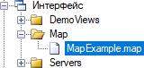
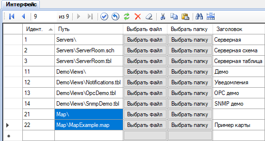
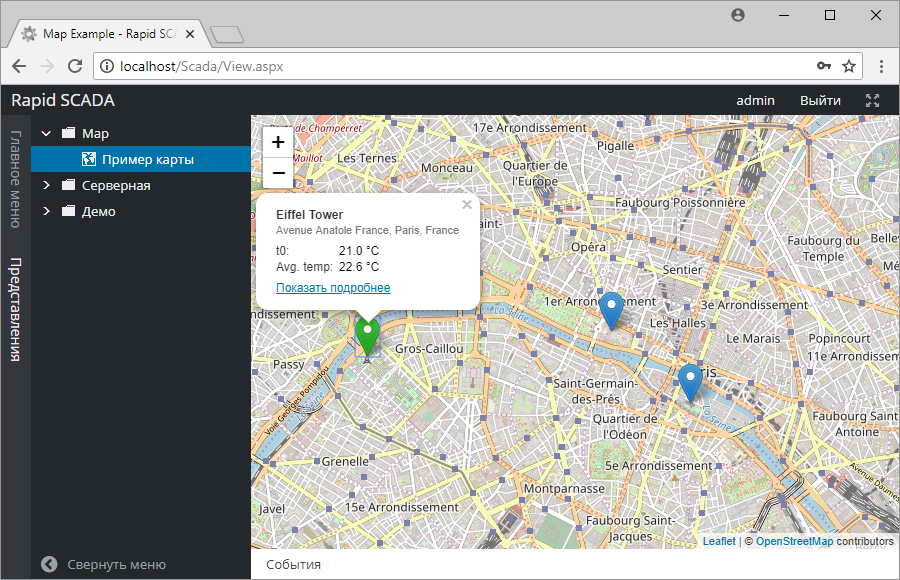

Плагин Карты отображает состояние и параметры автоматизированных объектов на интерактивных картах OpenStreetMap. Плагин позволяет наглядно контролировать географически распределённые системы и в случае необходимости переходить на страницу детальной информации по интересующему объекту.
Сначала необходимо выполнить общую последовательность установки плагина, которая описана по ссылке. А затем выполнить несколько дополнительных действий:
Карта является представлением в терминах Rapid SCADA. Создание и редактирование карт выполняется по аналогии со схемами и табличными представлениями.
Параметры отображения и объекты карты хранятся в файле с расширением map. Файл карты должен располагаться в директории интерфейса или её поддиректории внутри проекта.
Дистрибутив плагина содержит пример файла карты SCADA\Interface\Map\MapExample.map. Для редактирования файлов карты используйте любой удобный текстовый редактор, например, Notepad++. Чтобы создать свою карту, необходимо скопировать файл примера под новым именем, а затем отредактировать. Имя файла карты – произвольное, расширение файла – map.
Секция Tiling содержит параметры подключению к серверу тайлов (плиток), из которых состоит подложка карты. Можно использовать сервера тайлов от различных поставщиков, как платные, так и бесплатные.
<Tiling>
<UrlTemplate>https://{s}.tile.openstreetmap.org/{z}/{x}/{y}.png</UrlTemplate>
</Tiling>Секция InitialView задаёт начальные координаты и масштаб карты. Масштаб - это целое число от 0 до 18.
<InitialView>
<Lat>48.861111</Lat>
<Lon>2.336389</Lon>
<Zoom>13</Zoom>
</InitialView>Секция Locations описывает набор расположений, которые отображаются на карте. Рассмотрим пример:
<Locations>
<Location>
<Lat>48.858222</Lat>
<Lon>2.2945</Lon>
<Name>Eiffel Tower</Name>
<Descr>Avenue Anatole France, Paris, France</Descr>
<StatusCnlNum>0</StatusCnlNum>
<Data>
<DataItem cnlNum="101" />
<DataItem cnlNum="115">Avg. temp</DataItem>
</Data>
<Link viewID="2" />
</Location>
...
Lat и Lon - широта и долгота объекта на карте,
Name - наименование объекта,
Descr - дополнительное описание,
StatusCnlNum - номер входного канала, который означает статус данного объекта; 0 - канал не задан; положительное значение канала - объект в норме, иначе - объект требует внимания,
DataItem - отображаемый элемент данных, связанных с входным каналом,
Link - ссылка на представление, которое содержит детализированную информацию по объекту.
Чтобы карта появилась в дереве представлений, её нужно прописать в таблице Интерфейс с помощью программы Администратор. Необходимо указать путь к файлу карты относительно директории интерфейса и ввести заголовок - текст узла дерева (см. рис.).


Чтобы изменения отобразились в веб-приложении Вебстанция, необходимо передать проект на сервер и выполнить повторный вход в веб-приложение. Результат:
